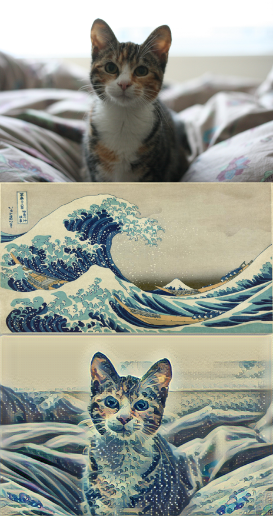

As an example of the kind of things you'll be building with deep learning models, here is a really fun project, fast style transfer. Style transfer allows you to take famous paintings, and recreate your own images in their styles! The network learns the underlying techniques of those paintings and figures out how to apply them on its own. This model was trained on the styles of famous paintings and is able to transfer those styles to other images and even videos!
I used it to style my cat Chihiro in the style of Hokusai's The Great Wave Off Kanagawa.
To try it out yourself, you can find the code in the fast-style-transfer GitHub repo. Either use git to clone the repository, or you can download the whole thing as a Zip archive and extract it.
The network has been trained on a few different styles (here) and saved into checkpoint files. Checkpoint files contain all the information about the trained network to apply styles to new images.
The easiest way to install all the packages needed to run this code is with Miniconda, a smaller version of Anaconda. Miniconda comes with Conda, a package and environment manager built specifically for data science. Install the Python 3 version of Miniconda appropriate for your operating system.
If you haven't used Conda before, please quickly run through the Anaconda lesson (Lesson 3 on this part).
For Windows, you'll need to install TensorFlow 0.12.1, Python 3.5, Pillow 3.4.2, scipy 0.18.1, and numpy 1.11.2. After installing Miniconda, open your command prompt. In there, enter these commands line by line:
conda create -n style-transfer python=3 activate style-transfer conda install tensorflow scipy pillow pip install moviepy python -c "import imageio; imageio.plugins.ffmpeg.download()"
For OS X and Linux, you'll need to install TensorFlow 0.11.0, Python 2.7.9, Pillow 3.4.2, scipy 0.18.1, and numpy 1.11.2.
In your terminal, enter this commands line by line:
conda create -n style-transfer python=3 activate style-transfer conda install tensorflow scipy pillow pip install moviepy python -c "import imageio; imageio.plugins.ffmpeg.download()"
Let’s take a quick look at what these commands do. The first line in both sets of instructions, creates a new environment with Python 3. This environment will hold all the packages you need for the style transfer code. The next line enters the environment. Next, we install TensorFlow, SciPy, Pillow (which is an image processing library), and moviepy. The last line here installs ffmpeg, an application for converting images and videos.
Finally, in your terminal, navigate to the fast-style-transfer folder and enter
python evaluate.py --checkpoint ./rain-princess.ckpt --in-path--out-path ./output_image.jpg
Note: Your checkpoint file might be named rain_princess.ckpt, notice the underscore, it's not the dash from above.
You can get more checkpoint files at the bottom of this page. Try them all!
Share what you create in the forums or on the Slack channel #neural-networks. We'd love to see what you come up with. Also, feel free to train the network on your own images, you can find instructions in the repository (although it does take some powerful hardware).
Note: Be careful with the size of the input image. The style transfer can take quite a while to run on larger images.
The checkpoints were trained on the following paintings:
Supporting Materials